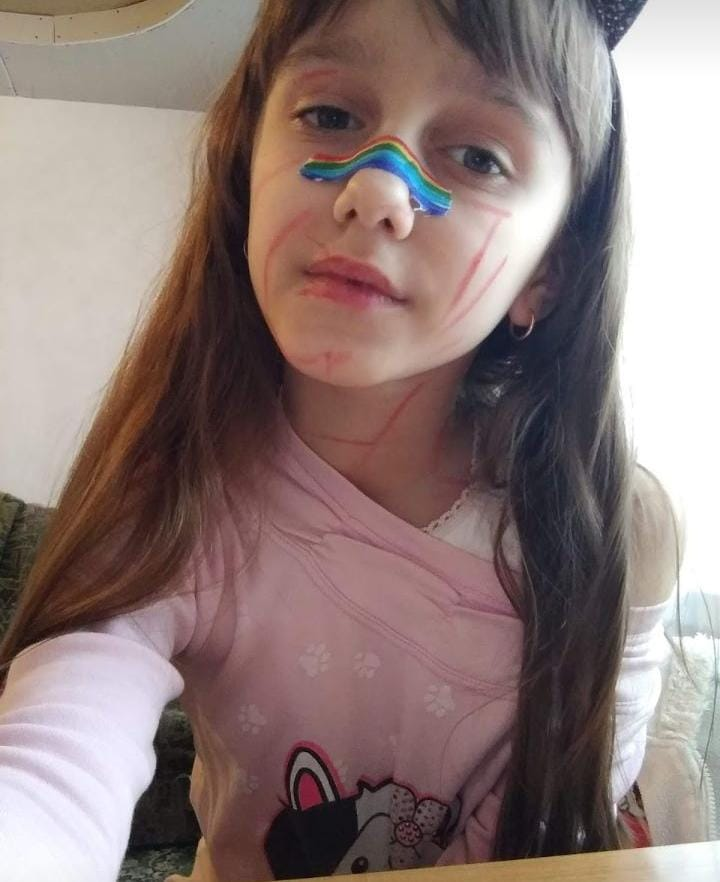

Обзоры на приложения
Like/Лайк

Лайк - приложение для загрузки коротких видео, которые можно оценивать, комментировать, смотреть на творчество дргуих. Все хорошо, но только на первый взгляд. На самом деле в это приложении редко появляются новинки, и это я не про загрузку видео, а про современность контента. Скорее всего такая отсалость в трендах существует из-за возраста пользователей. В основном там сидят дети, поэтому контент соответствующий
Вот и пример малоизвестных контентмейкеров:
